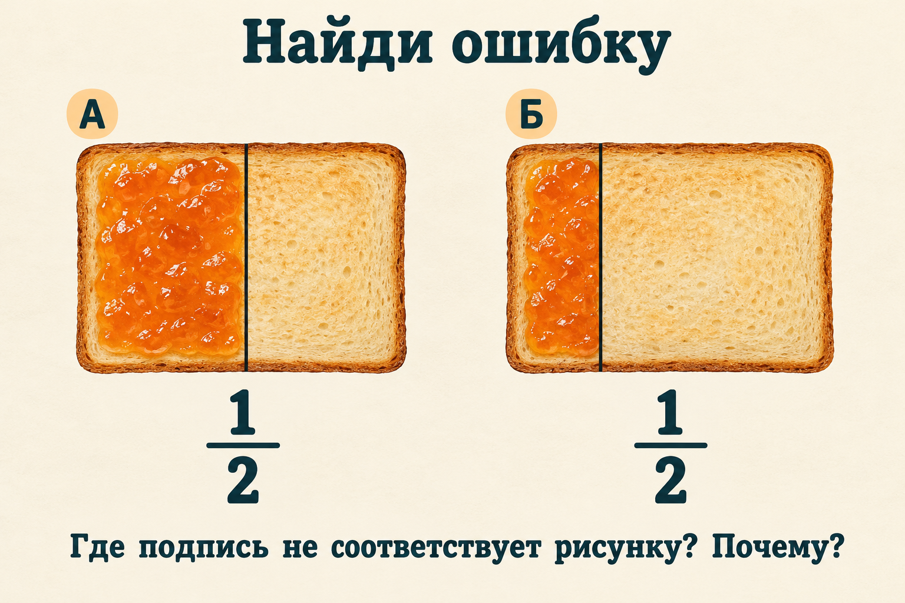
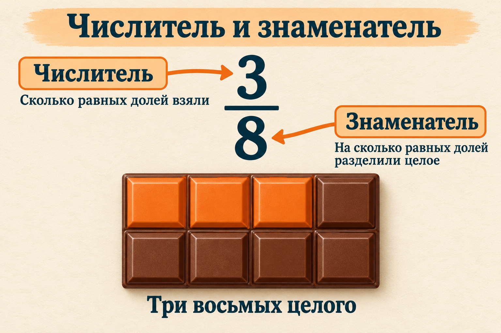

Под каждым рисунком написано 1/2. Какая подпись не подходит к рисунку — А или Б? Объясни, почему одного количества частей недостаточно.

Сравни размеры частей. Объясни решение, не ориентируясь только на цвет.Ответ и пояснение
Ошибка в подписи Б: части неравные, поэтому выделенную часть нельзя назвать половиной. У А линия проходит посередине и части равны. Изображение Б — намеренный пример неверной модели, а не образец половины.
Объясни, что показывают числа 3 и 8. Затем закрой памятку и назови числитель и знаменатель дроби 2/5. Что означает каждое число?

Для этого примера дробь показывает часть одного целого.Ответ и пояснение
В дроби 3/8 числитель 3 означает три взятые доли, знаменатель 8 — восемь равных долей целого. В дроби 2/5 числитель 2, знаменатель 5: взяты две из пяти равных долей.
Карточки дополняют вводную тему. Предложите ученику сначала назвать целое, затем проверить равенство долей и объяснить запись. Иллюстрации созданы генеративным ИИ и просмотрены при подготовке. Это наглядные модели: для точного построения используйте геометрические схемы из объяснения темы.
Можно показать карточки на проекторе или распечатать. Для работы не нужны регистрация и обращение к нейросети. Проверка понимания в реальном классе ещё не проводилась.